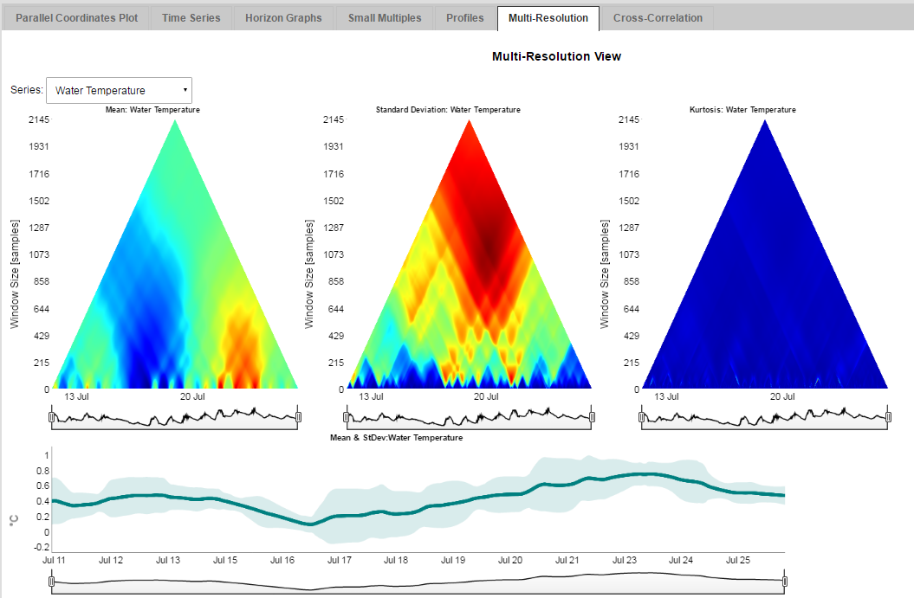
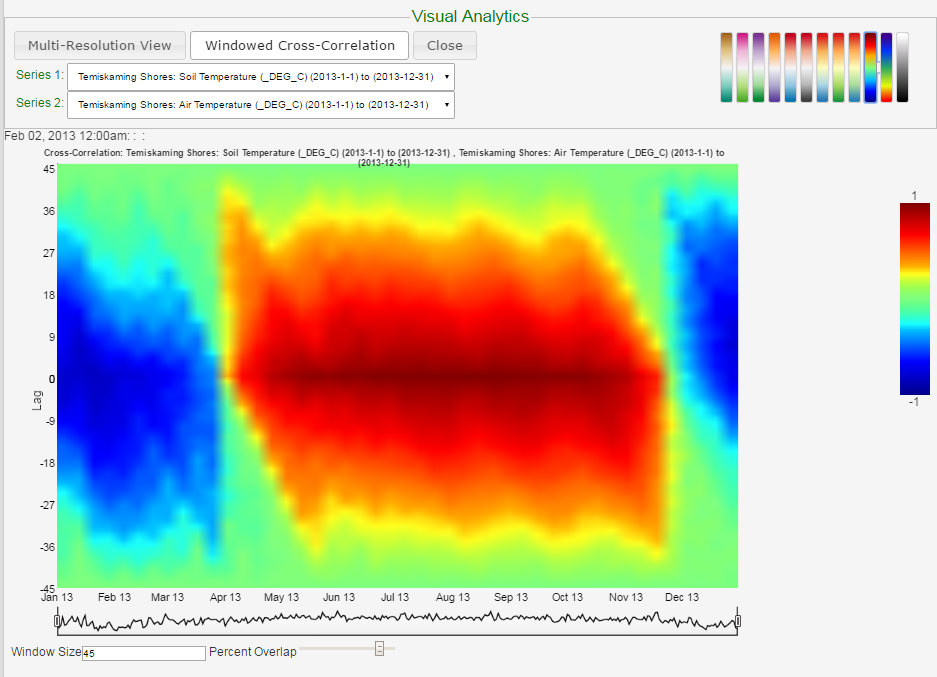
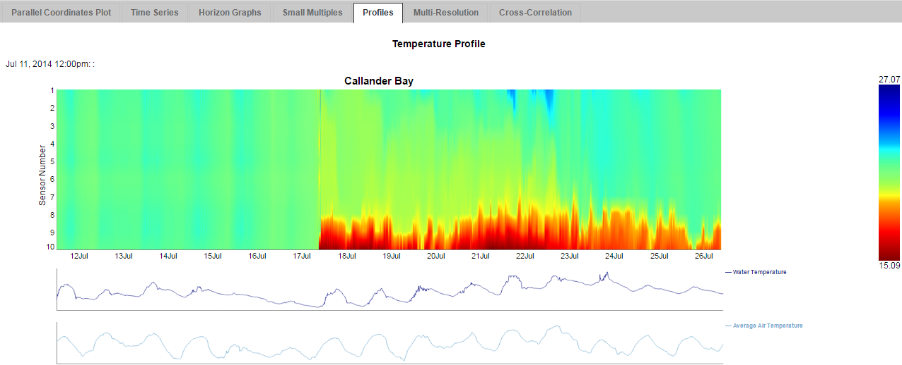

Multi-Resolution View: A visualization that allows the user to view various quantitative measurements (e.g. Mean, Standard Deviation) at multiple resolutions simultaneously. Interactivity is provided by showing the means with standard deviation in the bottom graph at a resolution chosen by mousing over the above views. This was developed for both GeoVisage and the Lake Nipissing site.

Windowed Cross-Correlation: This provides a visualization of the degree to which two time series are correlated, or the degree to which a single series is correlated with itself, within a given time window. The vertical axis represents shifting the time windows of a series to examine the correlation of different time intervals between the two series. In the example, red represents strong correlation and blue represents strong anti-correlation. This was developed for both GeoVisage and the Lake Nipissing site.

Temperature Depth Profile: A heatmap of tempratures at varying depths as measured by Lake Nipissing buoys. This is also on the live version, but features have been added, such as adding improved interactivity with the small multiples line plots and constructing the profile on the fly, rather than creating the images externally.